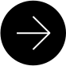

01STRATEGY
Evaluación
de proyectos
Analizamos ideas, mercado y competencia para identificar oportunidades, riesgos y definir la ruta más eficiente.
Evaluamos ideas, construimos marcas y desarrollamos productos digitales con método, investigación y sensibilidad estética.
ExplorarUna idea puede ser interesante y aun así necesitar investigación, estrategia, identidad o tecnología antes de convertirse en algo viable.
Windsor trabaja en ese espacio: entre la posibilidad y la ejecución.
Conoce nuestro métodoUna idea, una necesidad, una intuición, una oportunidad. Windsor estudia esa semilla antes de intentar hacerla crecer.
No ofrecemos una solución predeterminada para todos. Cada proyecto recibe una combinación distinta de estrategia, diseño y tecnología.
Analizamos ideas, mercado y competencia para identificar oportunidades, riesgos y definir la ruta más eficiente.
Construimos marcas desde su estructura: naming, identidad visual, posicionamiento y personalidad.
Revisamos redes sociales, sitios web y plataformas para encontrar problemas, oportunidades y mejoras accionables.
Construimos sitios web y aplicaciones personalizadas. Utilizamos IA para acelerar procesos, siempre con supervisión humana.
Cada proyecto se aborda con método, investigación y sensibilidad estética.
Investigamos el contexto, el problema, el mercado y las personas involucradas.

Convertimos información en una dirección estratégica clara.
Diseñamos y desarrollamos soluciones específicas para cada proyecto.
Revisamos, probamos y mejoramos antes de considerar el proyecto terminado.
La intuición abre posibilidades. La investigación permite tomar mejores decisiones.
Preferimos soluciones pensadas para cada proyecto antes que plantillas genéricas.
La estrategia y la estética no son elementos separados.
Utilizamos inteligencia artificial como herramienta de apoyo, nunca como sustituto del criterio humano.
Diseñamos y desarrollamos tu portafolio profesional sin plantillas. Un sitio hecho a la medida de tu trabajo, con la calidad de Windsor aplicada a un proyecto personal.
Conocer Windsor OneNo. Trabajamos con emprendedores, proyectos en etapa temprana, PYMEs y profesionales que necesitan desarrollar o replantear una idea, marca o producto digital.
Sí. La evaluación de proyectos existe precisamente para estudiar una idea antes de invertir recursos importantes en su construcción.
Sí. La utilizamos como herramienta de apoyo para acelerar procesos, explorar alternativas y aumentar nuestra capacidad. Las decisiones estratégicas y creativas permanecen bajo supervisión humana.
Sí. Podemos trabajar desde el naming y la arquitectura de marca hasta la identidad, posicionamiento y desarrollo de sus activos digitales.
Windsor One es nuestro servicio de portafolios digitales a medida para profesionales. Diseño personalizado, sin plantillas, con la misma calidad que aplicamos a cualquier proyecto de marca. Ver detalles
Cuéntanos sobre tu idea, proyecto, empresa u organización. Empecemos por entenderla.
Ir al formulario de contacto